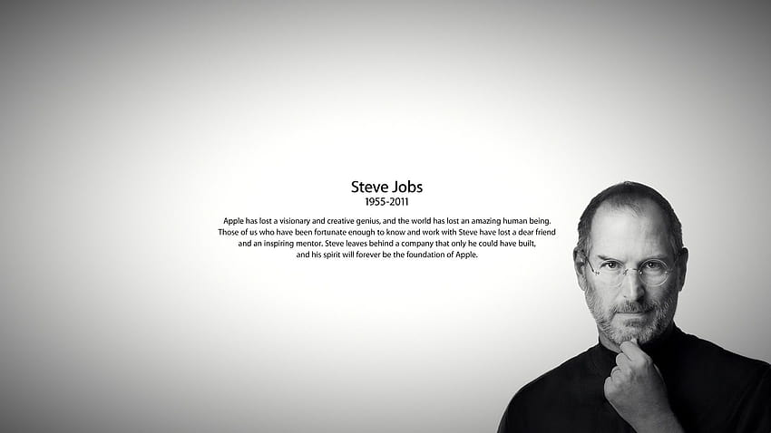

Steve Jobs
1955-2011

Biography
Steven Paul Jobs was an American business magnate, inventor, and investor. He was the co-founder, chairman, and CEO of Apple; the chairman and majority shareholder of Pixar; a member of The Walt Disney Company's board of directors following its acquisition of Pixar; and the founder, chairman, and CEO of NeXT.
- Born: 24 February 1955, San Francisco, California, United States
- Died: 5 October 2011, Palo Alto, California, United States
- Children: Lisa Brennan-Jobs, Eve Jobs, Reed Jobs, Erin Siena Jobs
- Spouse: Laurene Powell Jobs (m. 1991 - 2011)
- Parents: Abdulfattah John Jandali, Joanne Schieble Simpson, Paul Jobs, Clara Jobs
- Height: 1.88 m
- Organizations founded: Apple, Pixar, NeXT, Apple Store